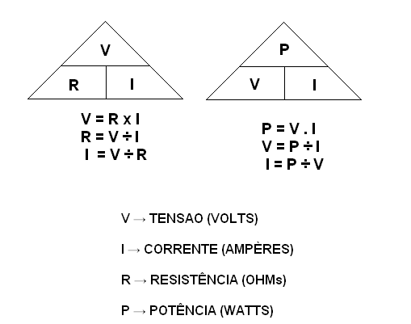
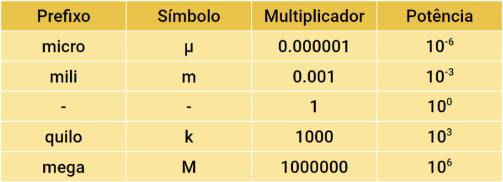
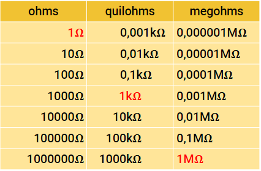
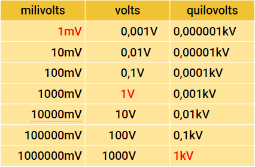
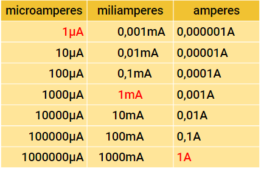

AVISOS
- Todo o repositório, site e conteúdo aqui ainda estão em desenvolvimento.
- A maioria dos conhecimentos depositados neste repositório/site foram retirados do curso Iniciante V8 Arduino - ROBOCORE.
- CONTUDO, VALE RESSALTAR QUE: Os conteúdos aqui presentes são resumos dos conteúdos do curso citado, RESUMOS FEITOS POR MIM, NÃO APRESENTANDO NENHUMA FORMA DE PLÁGIO. Eu havia criado esses resumos como fonte pessoal de estudo, mas decidi deixá-los abertos.
Dados todos os avisos, vamos seguir.
O que é um Arduino?
Segundo os criadores do Arduino: (Trecho retirado do site do Arduino - Arduino.cc.) "Arduino é uma plataforma eletrônica de código aberto baseada em hardware e software fáceis de usar.", de forma simplificada é uma plataforma que facilita o desenvolvimento de dispositivos da área de Robótica e Eletrônica, incluindo o software (IDE Arduino) onde serão escritos os códigos, além das placas que suportarão esses códigos.


Os componentes da placa
Apesar da gigante variedade de placas Arduino (UNO, MEGA...) a maioria irá seguir o mesmo padrão.

- Alimentação:
As placas arduino precisam de uma fonte de alimentação constante para que funcionem, tal fonte pode ser provida por um cabo USB ou fonte de alimentação conectada na tomada, no primeiro caso a conexão ao arduino será feita com um cabo USB terminado no tipo AB (ITEM 1 DA IMAGEM), já o segundo caso terminará em uma entrada P4 (ITEM 2 DA IMAGEM).
- Pinos (5V, GND, Digital, Analog...):
Os pinos no Arduino servem para conexão de fios para construção do circuito, os diferentes tipos exercem diferentes funções.
GND (ITEM 3 DA IMAGEM): abreviado de "ground", do inglês, serve para aterramento elétrico do circuito.
5V (ITEM 4 DA IMAGEM) e 3,3V(ITEM 5 DA IMAGEM): Ambos forncem energia para componentes conectados, contudo, a única diferença é que um deles fornece uma tensão de 5 Volts, enquanto o outro fornece 3,3 Volts.
Analógico (ITEM 6 DA IMAGEM): Área nomeada como "Analog In" na placa, servem para leitura de sinais analógicos (de sensores analógicos) e conversão dos mesmos em valores digitais.
Digital (ITEM 7 DA IMAGEM): Área nomeada como "Digital" na placa, servem para entrada ou saída digital.
PWM (ITEM 8 DA IMAGEM): Junto dos pinos digitais é notável alguns com um sinal ~ ao seu lado, esses atuam tanto como pinos digitais normais quanto para Modulação por Larguta de Pulso (PWM).
- Botão de reset (ITEM 9 NA IMAGEM):
O botão de reset é basicamente o sistema de reinicialização do Arduino, reiniciando a execução do código presente na placa.
- TX e RX (ITEM 11 NA IMAGEM):
Os LEDs indicadores TX e RX possuem a função de demonstrar quando a placa está recebendo ou enviando dados, sendo TX para transmissão e RX para recebimento.
- Circuito Integrado principal (ITEM 12 NA IMAGEM):
Principal componente da placa, é como o cérebro do Arduino, onde o código é executado.
NOTA: O seu Circuito Integrado pode se parecer diferente do que foi mostrado na imagem, contudo, ele ficará na mesma região.
NOTAS:
- NÃO use fontes de alimentação com voltagem superior a 15V, a mesma irá superar a tensão máxima suportada pelo Arduino e queimá-lo.
Instalação da IDE e Drivers
Nesta documentação NÃO irei ensinar como instalar ou usar a Arduino IDE e nem os Drivers, isso pois se trata de um processo bem simples, basta acessar a página oficial do Arduino - Arduino.cc e fazer os dowloads, contudo, caso sinta alguma dificuldade em instalar, configurar e conectar o software ou a placa sugiro que siga um dos tutoriais abaixo:
- Instalado o Arduino IDE -Robocore. ou
- Como Instalar o Arduino -canal Brincando com Ideias. ou
- INSTALAÇÃO DO SOFTWARE DO ARDUINO (IDE) -canal Arduino Brasil. ou
- ARDUÍNO #7: Instalando e testando o Software do Arduíno -canal GV Ensino.
A protoboard
NOTA: esta seção é referente à um componente que apesar de muito utilizado NÃO faz parte da placa Arduino, sendo um componente separado, caso você NÃO POSSUA uma protoboard sugiro que, além de parar por aqui neste tutorial também compre uma, pois a mesma é ESSENCIAL para o desenvolvimento de projetos.

Antes de tudo, o que realmente é uma protoboard? Bem, como mostrada na imagem acima é uma placa de ensaio cheia de contatos eletrônicos, que tornam mais fácil os testes de circuitos e montagem dos mesmos.
Existem diversos modelos de Protoboard, a que foi mostrada na imagem possui 400 pontos/furos, mas essa quantidade varia entre 400~800~1600.
Layout, Faixa de Barramento e Faixa de terminais.
Na maioria dos casos a placa de ensaio (Protoboard) será dividida em partes, sendo elas a "Faixa de Barramento" (Destacada em vermelho na imagem abaixo) e a "Faixa de Terminais".

A "Faixa de Barramentos" contém os pinos de alimentação (GND, por exemplo) e tem seus furos ligados de forma horizontal. Já a "Faixa de Terminais." possui furos ligados de forma vertical e é destinada para os componentes do circuito.

Primeiro experimento - testando a protoboard.
Este experimento é bem simples e servirá apenas para testar as ligações do Arduino e da Protoboard. Serão necessários
- Placa Arduino + Cabo para alimentação (USB/AB ou P4)
- Protoboard
- LED (de qualquer cor)
- Resistor 300 Ohms
- 4 fios conectores jumper
Depois de coletar os materiais basta seguir o circuito abaixo:

Introdução ao código - Lógica de programação
Uma das bases para a utilização de um Arduino, além da Eletrônica, é o código, a lógica de programação que está por trás do hardware.
Um código (software) nada mais é do que uma ordem de ações para chegar a um objetivo. Alguns exemplos de conjuntos de ações predeterminadas estão no dia a dia, nas receitas, ou nos mapas e em diversos outros. Em todos os casos citados você realiza uma ação e depois realiza a outra, a partir desse conceito também podemos deixar tudo mais complexo, incluindo condicionais, loops e etc.
O código no arduino
No caso dos códigos que os microcontroladores Arduino rodam temos a estrutura mostrada acima (Retirada de um exemplo nativo da IDE) como um padrão, sendo ela um bloco setup(), onde é configurada e preparada a estrutura do código, ali são definidos: tipos de pinos, comunicação serial e sua velocidade, etc. Abaixo do bloco setup() também temos o bloco loop(), bloco cujo código será repetido indefinidamente.
Por fim, a estrutura básica e muitas vezes padrão de um código Arduino é a mesma da imagem acima:
- Um bloco de variáveis que irá conter as variáveis globais utilizadas no código;
- Um bloco Setup que conterá as principais informações de configuração como entradas, saídas, comunicação serial e outros;
- Um bloco Loop principal que rodará o código em laço infinito;
- Um bloco de demais funções que conterá o restante do código, caso o mesmo exista.
Alguns dos elementos utilizados possuem ao seu lado o símbolo (), isso indica que elas são funções, além de tudo algumas possuem informações dentro de seus parêntesis, essas informações são parâmetros de função e podem aparecer ou não, dependendo apenas do tipo de função. Quanto aos símbolos {} e ;, eles servem para delimitar a função e a linha de código, respectivamente.
Compilador de código
Já citado aqui algumas vezes, o compilador de código serve para traduzir a linguagem de programação, C/C++ nesse caso, em linguagem de máquina, para que o microcontrolador (Arduino) seja capaz de entender e executar-lo.
NOTA: A plataforma Arduino utiliza a linguagem de programação C/C++, essa é uma linguagem cujo compilador de código é case sensitive, isso significa que é sensível na diferenciação entre letras maiúculas e minúsculas, portanto variáveis iguais com letras em tamanhos diferentes são variáveis diferentes, ESTa não é igual a estA.
Eletrônica básica
Como dito anteriormente, além das noções básicas de software também precisamos das noções básicas do hardware do Arduino, sendo assim, Eletrônica básica.
Elétrica: resistência, corrente, tensão.
No caso de uma simples lâmpada ligada à uma bateria de 5V, porque ela acende? Isso acontece pois quando conectado à fonte de energia (bateria, nesse caso), as partículas (elétrons) fluem entre os terminais da bateria, o fluxo criado tem o nome de corrente elétrica, e só acontece quando há diferença de potencial, essa diferença é a tensão elétrica.
A lei de Ohm é a determinante da relação entre essas 3 grandezas (resistência, tensão, corrente), através das fórmulas abaixo:
Segundo o Sistema Internacional de Unidades (S.I): Resistência elétrica é medida em Ohms, representada por Ω; tensão elétrica é medida em Volts e representada por V; corrente elétrica é medida em Amperes e representada por A.
Representação dos valores elétricos.
Na maioria das vezes, por variar muito, os valores elétricos serão representados junto à prefixos, algumas tabelas dos mais usados:
   Polaridade
Um dos tópicos mais importantes desta seção para o uso dos microcontroladores e construção dos circuitos é a polaridade. A polaridade do componente (terminal positivo e negativo) é essencial para a montagem dos circuitos, pois alguns possuem polaridade, em outras palavras, o seu funcionamento depende do sentido em que a corrente flui por eles. É válido ressltar que alguns componentes NÃO possuem polaridade, CONTUDO, ISSO NÃO SE APLICA PARA TODOS!
Quanto à indicação desse elemento: a polaridade pode ser indicada de diversas maneiras, por marcações ou diferença de tamanho dos pinos/pernas (como é o caso dos LEDs), ou até de forma mais detalhada.
É ESSENCIAL OBEDECER A POLARIDADE DOS COMPONENTES PARA MONTAR O CIRCUITO, CASO CONTRÁRIO O PROJETO PODE NÃO FUNCIONAR OU SER DANIFICADO!!
Curto-circuito
Um curto circuito ocorre quando a resistência é nula ou insignificante, nesse caso a corrente será infinita, causando um fluxo de energia muito maior do que os componentes suportam, fazendo com que os mesmos queimem.
POR ISSO, COMO DITO ANTES: FIQUE ATENTO E VERIFIQUE LIGAÇÕES E POLARIDADE ANTES DE CONECTAR O CIRCUITO À UMA FONTE ENERGIA!!!
Vale lembrar que todos os conceitos citados neste documento são apenas resumidos! Caso tenha interesse ou queira saber mais afundo basta pesquisar em fontes científicas!
A partir de agora você possui todos os conceitos para começar a montar os circuitos Arduino! Caso queira seguir basta clicar em um dos experimentos abaixo e continuar aprendendo mais!